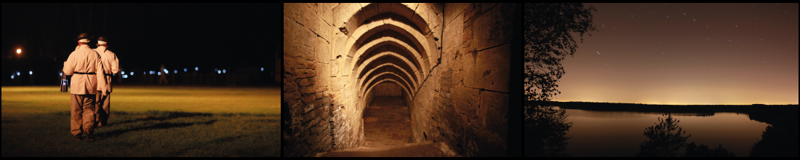

La Porte du Hainaut, Terre de Caractère

La Porte du Hainaut est une communauté d'agglomération située au cœur de la région Hauts-de-France, regroupant 47 communes riches en histoire et en caractère.
Proche de la frontière belge, ce territoire dynamique se distingue par son attractivité constante et son développement économique en perpétuelle croissance.
Les communes qui composent La Porte du Hainaut offrent une diversité de paysages à couper le souffle.
Son adhésion au Parc Naturel Régional Scarpe-Escaut,
la présence de sources thermales bienfaisantes à Saint-Amand-les-Eaux, ainsi que les nombreux cours d'eau, tels que la Scarpe et l'Escaut, qui traversent la région, témoignent de sa richesse naturelle.
Outre sa beauté, La Porte du Hainaut brille également par son patrimoine culturel, incarné par des bâtiments à l'architecture héritée de l'ère industrielle. La gastronomie locale, basée sur des produits du terroir renommés, invite à un voyage culinaire mémorable. De plus, un éventail d'activités conviviales s'adresse tant aux groupes qu'aux familles, offrant une expérience inoubliable.
Sans oublier le nouveau site dédié à l'image, l'Arenberg Creative Mine, qui ajoute une dimension contemporaine à la riche histoire de notre communauté.
Histoire

Un Passé Minier Remarquable
Pendant trois siècles, l'industrialisation minière a modelé La Porte du Hainaut, laissant une empreinte indélébile sur le territoire.
Le patrimoine minier, avec son histoire et ses mémoires, confère à cette région son caractère unique.
Aujourd'hui, ce patrimoine industriel est en reconversion.
Les carreaux de fosse, les chevalements, les terrils illustrent avec force cette période d'industrialisation, qui a façonné les villes et les paysages.
Aujourd'hui, ces vestiges font l'objet de rénovations et d'aménagements, dans des domaines aussi variés que le tourisme, l'environnement ou l'économie, permettant ainsi au public de les découvrir.
Ils incarnent un patrimoine architectural qui raconte une histoire sociale passionnante.
Le travail, le partage des métiers, les luttes sociales, ainsi que le brassage culturel résultant de la présence de travailleurs de nombreuses nationalités ont laissé une mémoire culturelle vibrante.
Des Batailles Mémorables
La Porte du Hainaut a également été le théâtre de batailles historiques.
Le Fort Beurnonville à Maulde, un bastion de la ligne Maginot Nord pendant la Seconde Guerre mondiale, et le Musée de la Résistance et de la Déportation à Denain sont des témoins de ces événements.
La Statue de bronze représentant le Duc de Villars, Maréchal de France, qui remporta sous Louis XIV la Bataille de Denain, le 24 juillet 1712, ce qui permit le rattachement de notre région à la France.
Bouchain, en tant que terre frontière, a été le théâtre d'importants événements militaires à travers les siècles, laissant de nombreux témoignages de ses fortifications renforcées par Charles Quint et Vauban.
Le Mémorial de la Bataille de l'Escaut à Bruille-Saint-Amand, témoin des combats sur l'Escaut en mai 1940 qui causèrent des pertes importantes parmi le 43e Régiment d'Infanterie.
Un Héritage Abbatial
La Porte du Hainaut abrite de nombreuses abbayes qui ont marqué son histoire.
Saint-Martin à Château-l'Abbaye, Notre-Dame de Vicoigne à Raismes, Prévôté Saint-Achaire d'Haspres, Chapitre Sainte-Remfroye de Denain, Saint-Pierre d'Hasnon, Ferme abbatiale d'Escaudain, Saint-Amand d'Elnone, et bien d'autres témoignent de la présence ancienne des moines au cours du premier millénaire de l'ère chrétienne.
Sous l'empreinte minière et industrielle du XIXe siècle se cache un riche patrimoine abbatial, ainsi que de précieux trésors artistiques, littéraires, architecturaux et musicaux liés à cette période.
Parmi toutes les abbayes de la région, celle de Saint-Amand-les-Eaux se distingue par la richesse de ses vestiges, notamment l'Échevinage et la Tour abbatiale, qui abritent désormais un musée, conservant ainsi vivante une part essentielle de l'histoire de La Porte du Hainaut.